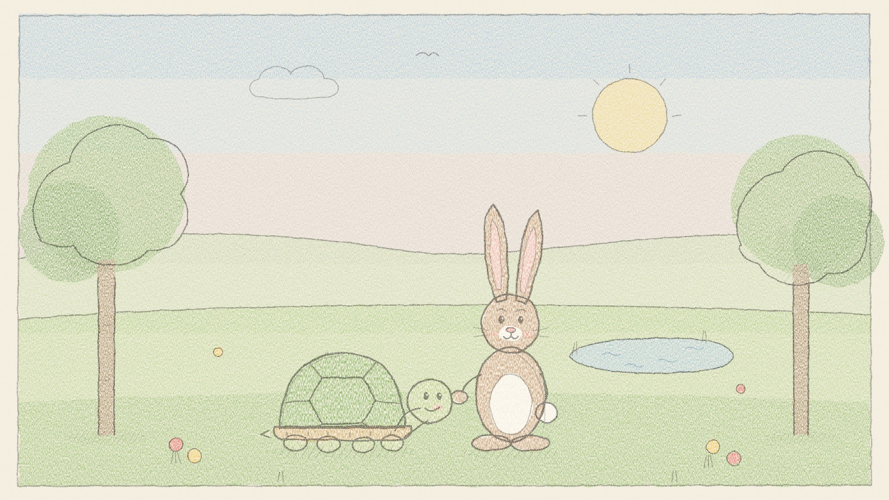

Le Lièvre et la Tortue : histoire du soir pour enfants, notre version (d'après Ésope)
Le Lièvre et la Tortue, la fable d'Ésope, en histoire du soir, notre version avec nos mots. Un lièvre rapide se moque d'une tortue lente, et la course finit par une surprise. Dans cet épisode : - Un lièvre moqueur - Une course, et une sieste dans l'herbe - Pas à pas jusqu'à l'arrivée Sources : The Hare & the Tortoise, Ésope, The Aesop for Children Musique : Kevin MacLeod (incompetech.com), CC BY 4.0 De douces histoires pour le soir et l'heure du conte, racontées lentement par une voix chaleureuse. luongnv.com/podcast/stories
Écouter sur Once Upon a Time Show Télécharger le MP3 Transcription
Également disponible en : English, Tiếng Việt
D’après The Hare & the Tortoise, de Aesop
Transcription
Narratrice : Bienvenue dans Once Upon a Time Show. C'est l'heure de l'histoire du soir. Bonsoir, mon petit. Installe-toi bien au chaud sous ta couverture. L'histoire de ce soir est très, très ancienne. C'est une fable d'Ésope, et nous la racontons avec nos mots. C'est l'histoire d'un lièvre très rapide, d'une tortue très lente et d'une grande course. Alors, on commence ? Il était une fois, dans un grand pré tout vert, un lièvre. Il avait de longues oreilles, de longues pattes, et il courait très, très vite. Dans le même pré vivait une tortue. Elle portait sur son dos une carapace ronde et dure. Elle marchait doucement, un petit pas après l'autre. Pas à pas, pas à pas.
Un jour, le Lièvre se moqua de la Tortue. Que tu es lente, dit-il. Est-ce que tu arrives quelque part, au moins ? La Tortue sourit. Oui, dit-elle, et j'arrive plus tôt que tu ne crois. Faisons la course, et tu verras. Le Lièvre trouva ça très drôle. Une course contre une tortue ? Mais il dit oui, juste pour s'amuser. Le Renard vint les aider. Il traça un chemin à travers le pré, du vieux chêne jusqu'à la petite mare bleue. La mare, c'était l'arrivée. À vos marques, dit le Renard. Prêts ? Partez ! Hop ! Le Lièvre fila comme le vent. La Tortue partit aussi. Pas à pas, pas à pas. Bientôt, le Lièvre fut très loin devant. Il se retourna. La Tortue n'était plus qu'un tout petit point. Le Lièvre bâilla. J'ai tout mon temps, dit-il. Je vais faire une petite sieste.
Alors le Lièvre se coucha dans l'herbe douce, à l'ombre d'un buisson. Il ferma les yeux, et bientôt il dormait à poings fermés. Il ronflait tout doucement. Mais la Tortue, elle, ne s'arrêtait pas. Pas à pas, sans se presser. Elle passa tout près du buisson où dormait le Lièvre. Et le Lièvre dormait toujours, bien tranquille. Enfin, le Lièvre se réveilla. Il s'étira et se frotta les yeux. Puis il regarda au bout du chemin. Oh là là ! La Tortue était presque à la mare bleue ! Le Lièvre courut aussi vite qu'il put. Plus vite, plus vite ! Mais c'était trop tard. La Tortue fit un dernier petit pas, et elle passa la ligne d'arrivée.
La Tortue avait gagné la course ! Le Renard applaudit. Le Lièvre était tout essoufflé. Puis il fit un petit sourire. Bravo, dit-il. Tu es vraiment arrivée. La Tortue lui sourit. Rien ne sert de courir, dit-elle doucement, il faut partir à point. Et ce jour-là, le Lièvre apprit quelque chose. Le plus rapide ne gagne pas toujours la course. Maintenant, le pré est tout calme. Le soleil se couche, et le ciel devient rose et doré. Le Renard se blottit dans son terrier. Le Lièvre s'allonge dans l'herbe douce. La Tortue rentre sa tête dans sa carapace bien douillette. La petite mare fait chut, chut. Ferme les yeux maintenant, mon petit. Doucement, tout doucement, respire. Pas à pas, pas à pas, jusqu'au pays des rêves. Bonne nuit de la part de Once Upon a Time Show. Fais de beaux rêves.